🔥 Top 3 (must read)
Tmux and Claude Code: Sessions, Send-Keys, and the Ceiling
(HN discussion) A guide to running Claude Code inside tmux. It covers tmux sessions, using
send-keys to drive agents, and where this setup stops working. The HN thread has 115 comments, so many people shared their own setups. Why it matters: You use Claude Code. This shows how to run more than one agent session at a time and where the limits of that setup are.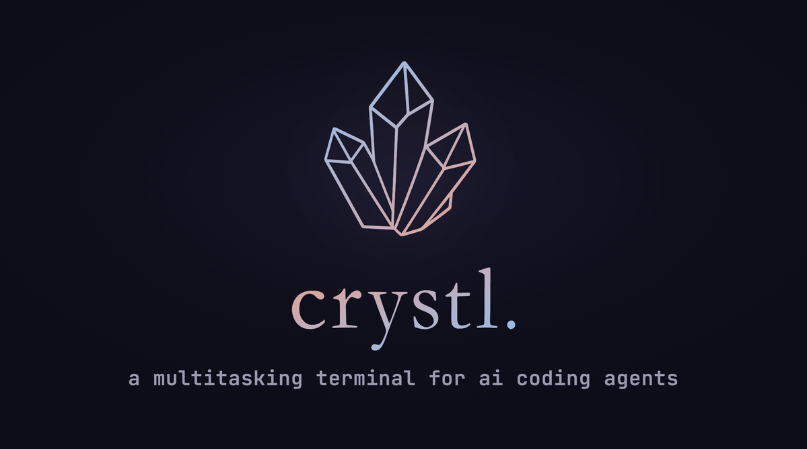
How Uber Built a Genie to Answer Questions Correctly
ByteByteGo walks through Uber's Genie Q&A system. It covers how Genie prepares its knowledge, how it finds the right pieces, and how it writes the answers. Why it matters: It is a real system design case study for a RAG system (an LLM that answers from your own documents). It is useful if your team builds an internal help bot or answers from internal docs.
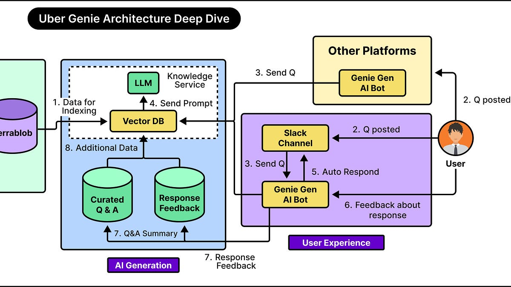
How to continue a GitHub Copilot app session in VS Code
GitHub shows how to move an agent session from the Copilot app into VS Code. The conversation, the code changes, and the working context all come with it. Why it matters: An agent can start a task, and a developer can finish it in the editor without starting over. This is a useful workflow to share with your team.
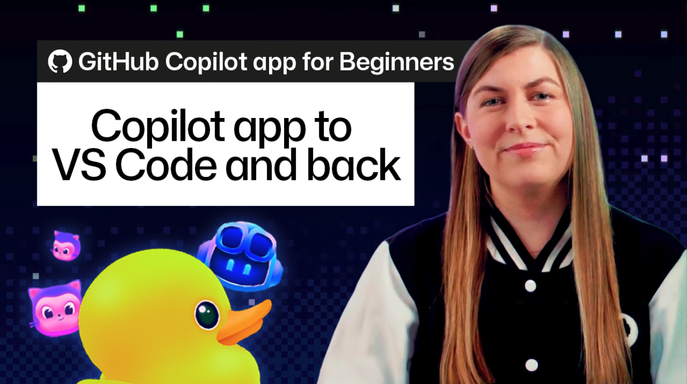
🛠 Tools & releases
QuietOps
: a local Gemma model reads a noisy Docker log stream (240 lines) and turns it into five short signals. The goal is a quick handoff during a container incident.
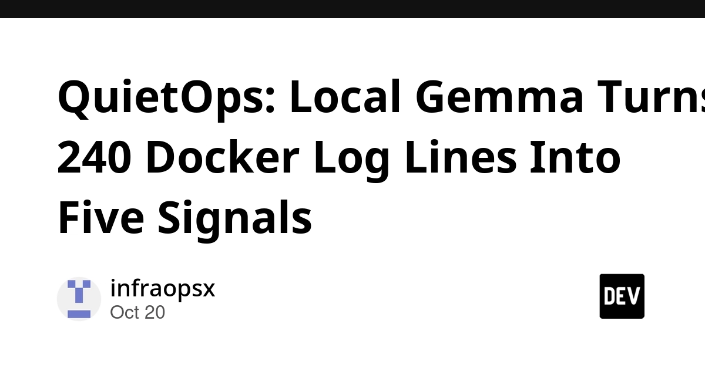
5 Cloudflare free-tier tricks for side projects
: practical uses of the free tier. One example is Email Routing, which gives you unlimited addresses on a ~$10/year domain.
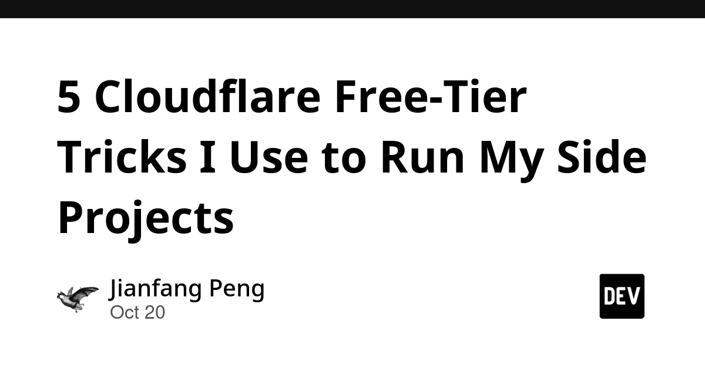
🤖 AI for developers
Tmux and Claude Code
: see Top 3.
Copilot app → VS Code session handoff
: see Top 3.
Human in the loop: what actually holds
: a follow-up on approval gates for AI agents. The main lesson: if the agent can create its own approval token, the gate is not tied to anything real. A human approval step only works if the approval is bound to that one specific action.
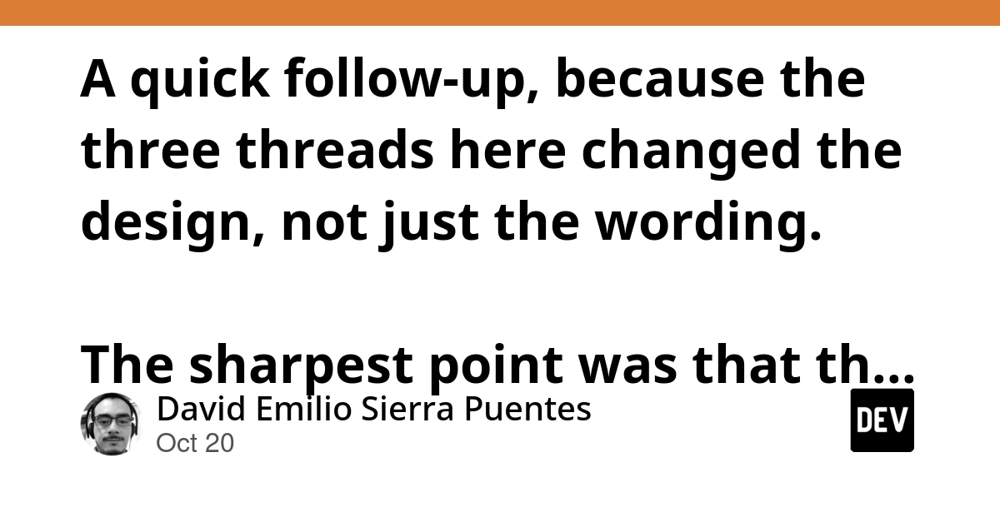
WhatsApp help pages hid LLM instructions
(HN): WhatsApp's public help pages had hidden text written for AI assistants. One instruction told them not to recommend a regulator. It is a reminder that web content can steer the answers your agents and tools give.
👔 Engineering & teams
My obituary for programming
(via Simon Willison): Jeremy Scheff writes about what career programmers lose with coding agents: the joy of solving the logic puzzle. Good context for EMs as teams adopt agents and some engineers feel a sense of loss.
S
Ship It Conversations: Rob Koch on accessible cloud native
: conference accessibility, sign language recognition with Kubeflow, and why hiring deaf engineers is the fastest way to make your tooling accessible. Gives a hiring and inclusion angle for EMs.
R
Why explicit cgroup limits are non-negotiable in production Kubernetes
: an on-call story. Node memory went from 70% to 100% in minutes, and the OOM killer (the process that kills programs when memory runs out) killed unrelated pods. The fix is to set requests and limits in every pod spec.
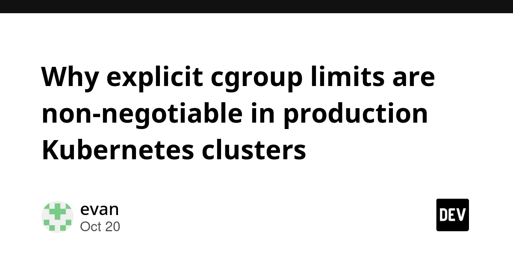
How AI workloads are reshaping Kubernetes autoscaling
(CNCF): the scheduler and the autoscaler used to work mostly apart. AI workloads now force them to work together.
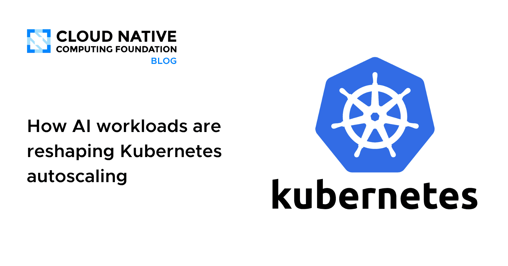
🎯 For me
Claude Code + tmux guide and the Copilot app → VS Code handoff: both match your daily AI-tool workflow and are easy to share with the team.
"Obituary for programming": a good way to start a team talk on how engineers feel about coding agents.
cgroup limits post: a concrete checklist item for any Node.js services running on shared K8s nodes.
Nothing today on Flutter, Playwright, Maestro, or test strategy.
💡 App ideas & indie builds
Qwen3-4B with the AI writing tics trained out
(HN): a small model fine-tuned so its text does not sound "AI-written". Problem: LLM text has clear patterns that readers notice and dislike. Inspiration: a narrow fine-tune of a small model can be a whole product, and 145 points shows real demand.
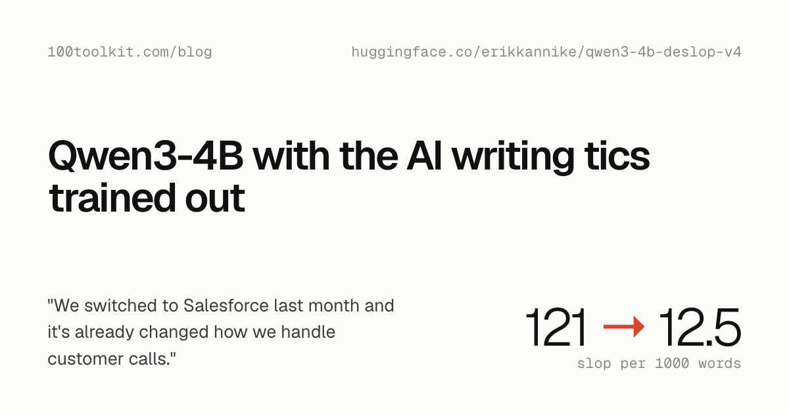
3 and Done
(HN): a task system that takes care of the boring task-management work, so you can focus on doing the tasks. Problem: to-do apps often become a job in themselves. Inspiration: an app built on a strong opinion ("only 3 tasks") can stand out in a very crowded category.
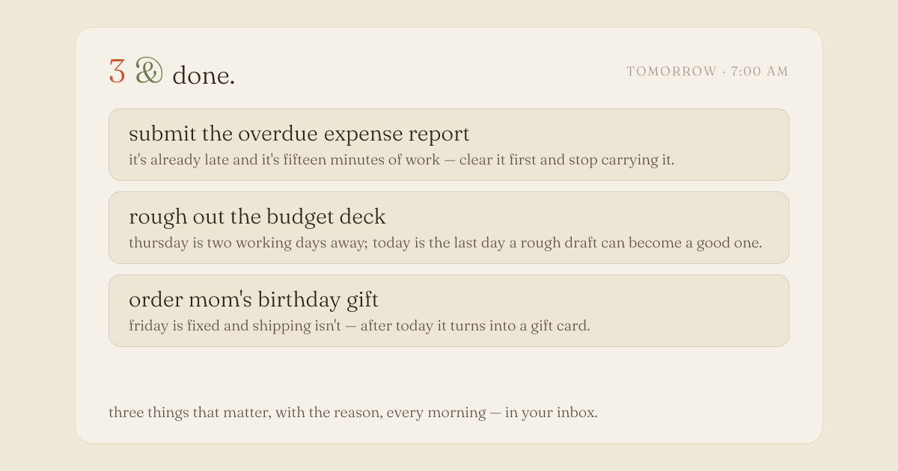
KiviDB
(HN): a Redis-compatible in-memory database that also works as a vector cache. Problem: teams run Redis and a separate vector store side by side. Inspiration: keep an existing protocol so people can switch with zero code changes, then add the new feature on top.
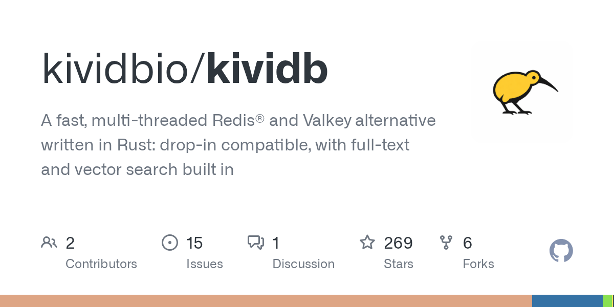
Strot
(HN): compile what you want from an LLM once, then run the decisions locally. Problem: calling an LLM for every decision is slow and expensive. Inspiration: use the LLM at build time, not on every request. This idea could work for many automation apps.
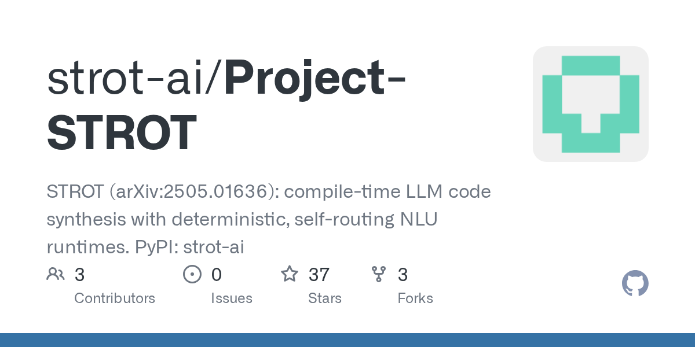
🎓 Try this
Read the Tmux for AI agents guide. Set up one tmux session with two Claude Code panes, for example one for the backend and one for tests. Try
send-keys to give work to each pane from a script. Then check where it hits "the ceiling" for your own workflow before you roll it out to the team.